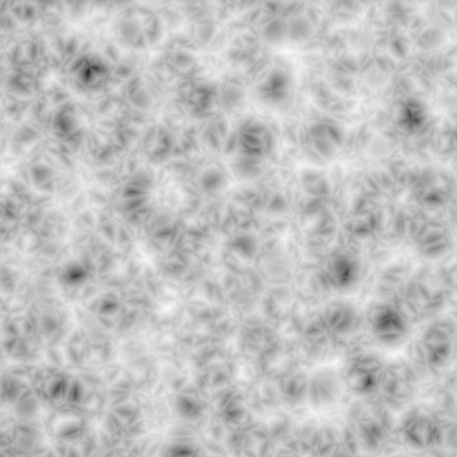

Вступ¶

The Texture Type list in the Texture panel of the Texture buttons. (Non-procedural textures darkened out).
Процедурні -- procedural текстури -- це текстури, що визначаються математично. Вони, як правило, відносно прості у використанні, оскільки вони не потребують для розкладання якогось спеціального способу. Це не означає, що процедурні текстури не можуть ставати дуже складними.
Ці типи текстур є «реальними» 3D. Цим ми маємо на увазі, що вони ідеально вписуються у краї та продовжують виглядати так, як призначені виглядати, навіть якщо їх розрізати; ніби брусок деревини був реально розрізаний на два бруски. Процедурні текстури не фільтруються та не загладжуються. Це навряд чи коли-небудь є проблемою: користувач може легко зберегти визначені частоти у межах доступних лімітів.
Загальні опції¶
Базис Шуму -- Noise Basis¶
Крім того, кожна базована на шумі текстура у Blender'і (за винятком текстури Вороного та простого шуму) має уставу «Базис Шуму» -- "Noise Basis", яка дозволяє користувачу вибирати, за допомогою якого алгоритму генерувати текстуру. Цей список включає оригінальний у Blender'і алгоритм шуму. Устави Noise Basis роблять процедурні текстури надзвичайно гнучкими (особливо тип Musgrave).
Базис Шуму -- Noise Basis управляє структурним виглядом текстури:

Оригінал Blender'а -- Blender Original. |

Вороний F1 -- Voronoi F1. |

Вороний F2-F1 -- Voronoi F2-F1. |

Оригінал Перліна -- Original Perlin. |

Вороний F2 -- Voronoi F2. |

Тріск Вороного -- Voronoi Crackle. |

Покращення Перліна -- Improved Perlin. |

Вороний F3 -- Voronoi F3. |

Шум Комірки -- Cell Noise. |

Вороний F4 -- Voronoi F4. |
{kind=link}
Існують дві можливі устави для Noise Basis, які відносно схожі на Blender Original: Improved Perlin та Original Perlin.
Набла -- Nabla¶
Майже усі процедурні текстури у Blender'і використовують похідні для розрахунку нормалей для розкладання текстури (за винятком типів Blend та Magic). Це важливо для Карт Нормалей та Карт Зміщення. Сила цього ефекту визначається числовою кнопкою Nabla.
Поради¶
Використовуйте кнопки устави Size на панелі Mapping для задання розміру, з яким будуть розкладені процедурні текстури.
Procedural textures can either produce colored textures, intensity only textures, textures with alpha values and normal textures. If intensity only ones are used the result is a black-and-white texture, which can be greatly enhanced by the use of ramps. If on the other hand you use ramps and need an intensity value, you have to switch on No RGB in the Mapping panel.